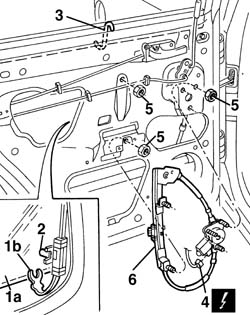

7010M20 repeair side door electrically operated window motor - r r with door panel-mount frame removed
- Path
- Procedures > 70 FITTINGS > 7010 PASSENGER COMPARTMENT REAR SIDE DOORS > 7010M rear electric windows > 7010M20 repeair side door electrically operated window motor - r r with door panel-mount frame removed
- Kind
- repair procedure (removal / refitting; the operation number is the code)
- Applies to
- all engines; all production periods
- Interactive page
- https://sloeber94.github.io/elrnDB-a156/en/#/3238689
Applies to: all engines; all production periods; only with equipment: Rear power windows
 Removing
Removing
 Refitting
Refitting7010A04 rear side door water guard protection - r r or arrange with door panel removed
7010D30 rear side descending window glass scraper (inner) r r
1. Open 1/3 of the window glass (1a), then disconnect the window glass safety catch (1b).
2. Open 2/3 of the window glass then disconnect it from the drive pin.
3. Close the window glass by hand completely; insert a support hook as it is shown in the picture, in order to avoid the accidental falling of the window glass.
4. Disconnect the electrical connection of the window glass motor.
 | Name | Connector |
|---|---|---|
4 | Rear left electric window motor |
| Name | Connector |
|---|---|---|
4 | Rear right electric window motor |
5. Unscrew the window glass stop nuts.
6. Remove the door frame window glass.

Applies to: all engines; all production periods; only with equipment: Rear power windows
Refitting
RemovingCheck that the window glass device is intact and the function of the motor.
Reassemble the window glass in the door frame fixing it with screws.
Connect the electrical connection of the window glass motor.
Remove the window glass support hook.
Open 2/3 of the window glass and connect it to the drive pin.
Open 1/3 of the window glass, then connect the window glass safety catch.
7010D30 rear side descending window glass scraper (inner) r r
Check the regular function of the window glass.
7010A04 rear side door water guard protection - r r or arrange with door panel removed
Topics linked from this page (4)
- 7010A04 rear side door water guard protection - r r or arrange with door panel removed
- 7010D30 rear side descending window glass scraper (inner) r r
- N65 Rear left electric window motor
- N66 Rear right electric window motor